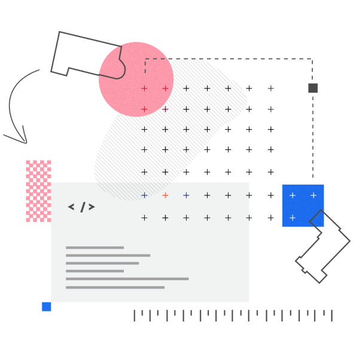

Структурируй, группируй, изучай
В мире информационных технологий успех достигается через систематический подход к работе. Для создания инновационных решений и устойчивых проектов важно придерживаться трёх ключевых принципов: структурирование, группировка и изучение.
Читать больше